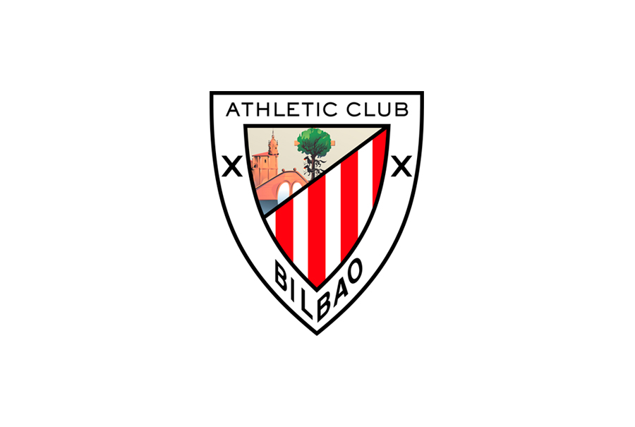

ATHLETIC CLUB
Athletic Cluben historia.

ATHLETIC CLUB
Athletic Club, normalean Athletic deitua, Bizkaian (Euskal Herria) Bilboko udalerriko futbol talde espainiarra da. 1898an sortu zen eta Espainiako Lehen Mailan jokatzen du. F. C. Barcelona eta Real Madril C. F.rekin batera, Lehen Mailan denboraldi guztietan jokatu duten hiru klubetako bat da.
Athletic Ligako titulu gehien dituen Espainiako ligan laugarren kluba da, 8 liga txapeldun ditu bere merituan. Kopako 24 txapelketa ere irabazi ditu; Espainiako hiru Superkopa, Eva Duarte Kopa bat, Kluben Munduko Kopa Txikia, Latinako Kopako azpicampeonato bat, UEFAko Kopako azpicampeonato bat eta UEFA Europa Leagueko azpicampeonato bat. LFPko sailkapen historikoan bosgarren postua hartzen du, Real Madrid C.F., F.C. Barcelona, Club Atletico de Madrid eta Valentzia C.F.ren atzetik. Emakumezkoen talde bat ere badu klubak, eta Espainiako Super Ligako 5 txapelketa irabazi ditu.
Bere egungo estadioa San Mames da, 2013an inauguratua. Bilboko Azoka zaharra zegoen tokian eraikia, aurreko estadioaren eremuaren zati bat hartzen du, San Mames ere deitua eta "katedrala" izenez ezagutzen dena, hori inauguratu zen. 1913an eta 2013an eraitsi, Ligako txapelketa amaitu ostean. Garai hartan sortu zenetik Lehen Mailako denboraldi guztiak hartu zituen estadio bakarra zen.
Orri Nagusia